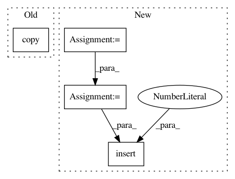

45c9fcd8b1df849a0c3b19403d13da38b7cd68c3,tpot/operators/preprocessors/zero_count.py,ZeroCount,transform,#ZeroCount#Any#,34
Before Change
modified_df["zero_col"] = feature_cols_only.\
apply(lambda row: (num_features - np.count_nonzero(row)), axis=1).astype(np.float64)
return modified_df.copy()
class TPOTZeroCount(Preprocessor):
Uses TPOT"s ZeroCount to transform the feature set
After Change
X_transformed: array-like, shape (n_samples, n_features)
The transformed feature set
X = check_array(X)
n_samples, n_features = X.shape
X_transformed = np.copy(X)
non_zero = np.apply_along_axis(lambda row: np.count_nonzero(row), axis=1, arr=X)
zero_col = np.apply_along_axis(lambda row: (n_features - np.count_nonzero(row)), axis=1, arr=X)
X_transformed = np.insert(X_transformed, n_features, non_zero, axis=1)
X_transformed = np.insert(X_transformed, n_features + 1, zero_col, axis=1)
return X_transformed
In pattern: SUPERPATTERN
Frequency: 3
Non-data size: 4
Instances
Project Name: EpistasisLab/tpot
Commit Name: 45c9fcd8b1df849a0c3b19403d13da38b7cd68c3
Time: 2016-07-07
Author: supacoofoo@gmail.com
File Name: tpot/operators/preprocessors/zero_count.py
Class Name: ZeroCount
Method Name: transform
Project Name: EpistasisLab/tpot
Commit Name: 2ab8c1444facbd46df8767a5badda5b9f1a50c29
Time: 2016-08-01
Author: supacoofoo@gmail.com
File Name: tpot/operators/combine_dfs.py
Class Name: CombineDFs
Method Name: __call__
Project Name: EpistasisLab/tpot
Commit Name: 929ece0faa71cf615f05617884b962e08a164377
Time: 2016-08-02
Author: supacoofoo@gmail.com
File Name: tpot/operators/classifiers/base.py
Class Name: Classifier
Method Name: _train_and_predict